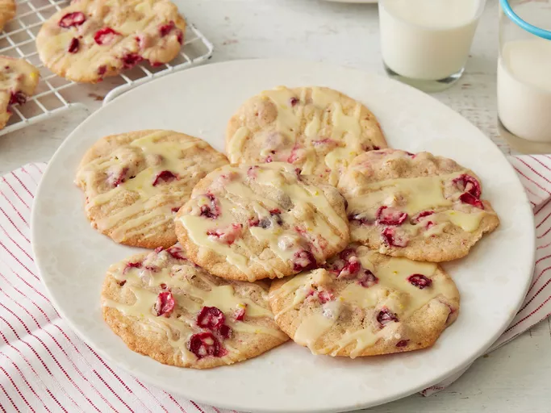

Home
Cranberry Orange Cookies

Description
These cranberry orange cookies are nice to have during the holidays, but don't expect them to stay around long. These orange-flavored cranberry cookies are tart and delicious, not to mention beautiful. Not really a favorite of kids.
Ingredients
- Butter: These sweet cookies start with two sticks of softened butter.
- Sugars: You'll need white and brown sugars for the cookie dough, while confectioners' sugar goes into the glaze.
- Egg: An egg adds moisture and richness. It also acts as a binder, which means it helps hold the dough together.
- Orange: This flavorful cookie recipe calls for orange juice (fresh or store-bought) and orange zest — in the dough and the glaze.
- Flour: All-purpose flour adds structure and brings the dough together.
- Baking soda: Baking soda acts as a leavener, which means it helps the cookies rise.
- Salt: A pinch of salt enhances the overall flavor.
- Cranberries: Opt for fresh cranberries that are firm, plump, and blemish-free.
- Walnuts: Walnuts are optional, but they add welcome crunch.
Steps
- Cream the butter and sugar. Beat in the egg, juice, and zest.
- Whisk the dry ingredients in another bowl, then add the dry mixture to the wet mixture.
- Stir in the cranberries and nuts.
- Drop the cookies on a baking sheet and bake until the edges are golden.
- Mix the confectioners' sugar, juice, and zest to make the glaze.
- Spread the glaze over the cooled cookies.